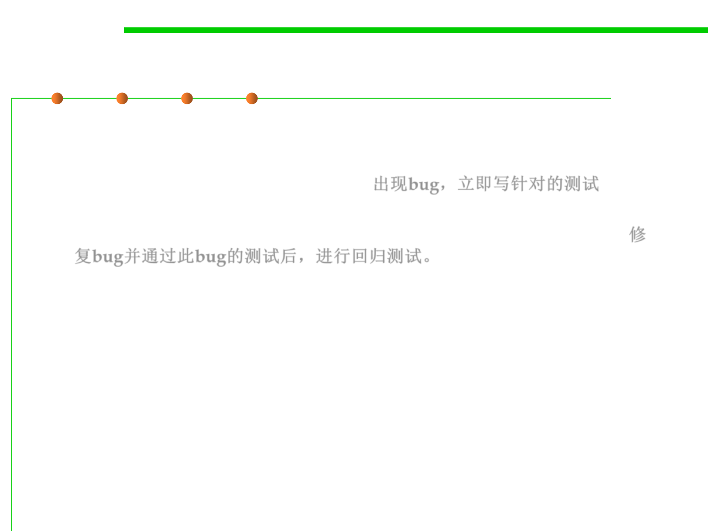

Test-first debugging
7.5 Testing and Test-First Programming
▪ This idea also leads to test-first debugging.
– When a bug arises, immediately write a test case for it that elicits it, and
immediately add it to your test suite. 出现bug，立即写针对的测试
– Once you find and fix the bug, all your test cases will be passing, and
you’ll be done with debugging and have a regression test for that bug. 修
复bug并通过此bug的测试后，进行回归测试。
▪ In practice, these two ideas, automated testing and regression
testing, are almost always used in combination.
– Regression testing is only practical if the tests can be run often,
automatically.
– Conversely, if you already have automated testing in place for your
project, then you might as well use it to prevent regressions.
▪ So automated regression testing is a best-practice of modern
software engineering.